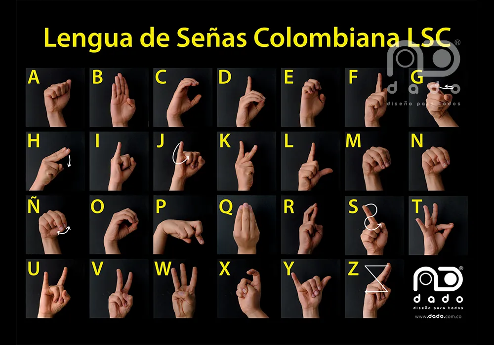

Porque la comunicación es de dos partes:
No solo los sordos tienen que adaptarse.
Los oyentes también tienen la responsabilidad de aprender, practicar y respetar.
| Persona sorda | Persona oyente | Comunicación |
|---|---|---|
| Usa lengua de señas o abecedario | Aprende señas básicas | Se entienden por señas o deletreo |
| Tiene derecho a comunicarse | Tiene deber de respetar y entender | Se respetan mutuamente |
| Deletrea su nombre o síntomas | Escucha con paciencia y atención | Logran explicar y recibir ayuda médica |
¡La lengua de señas no es solo para sordos!
Es para todos, porque todos tienen derecho a comunicarse y ser entendidos.